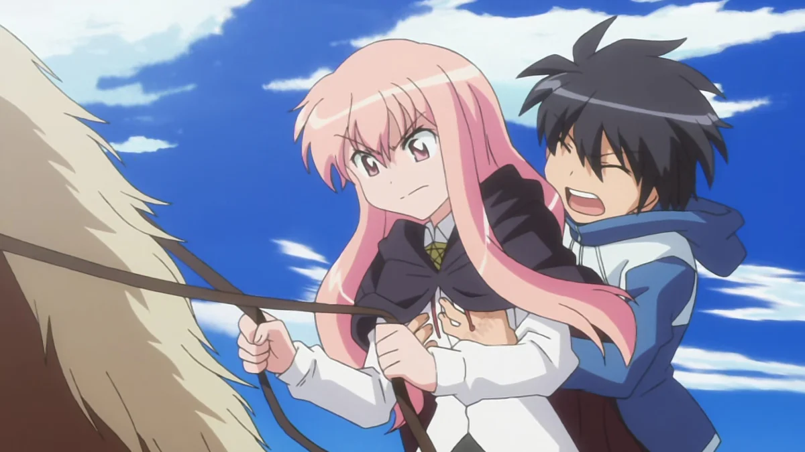
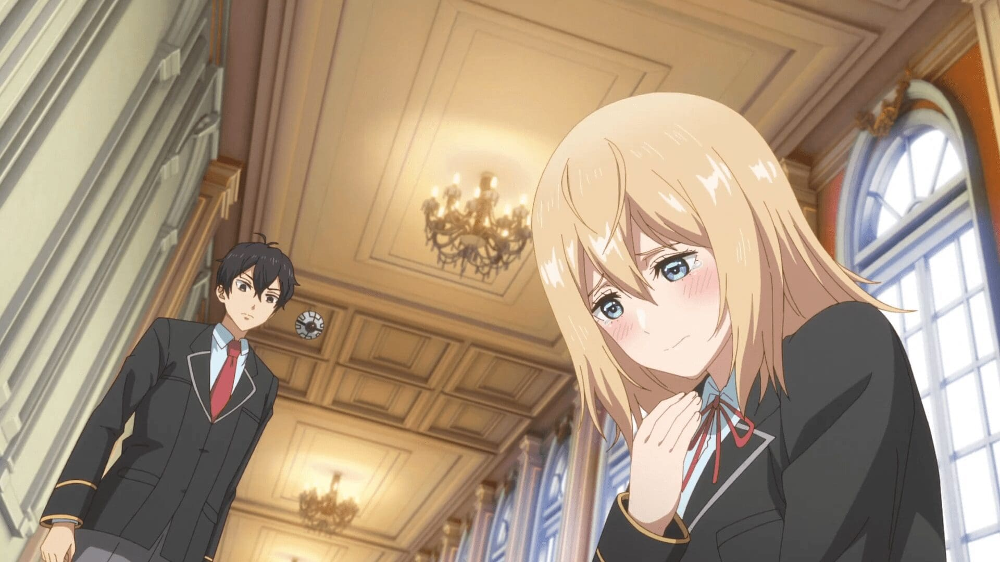
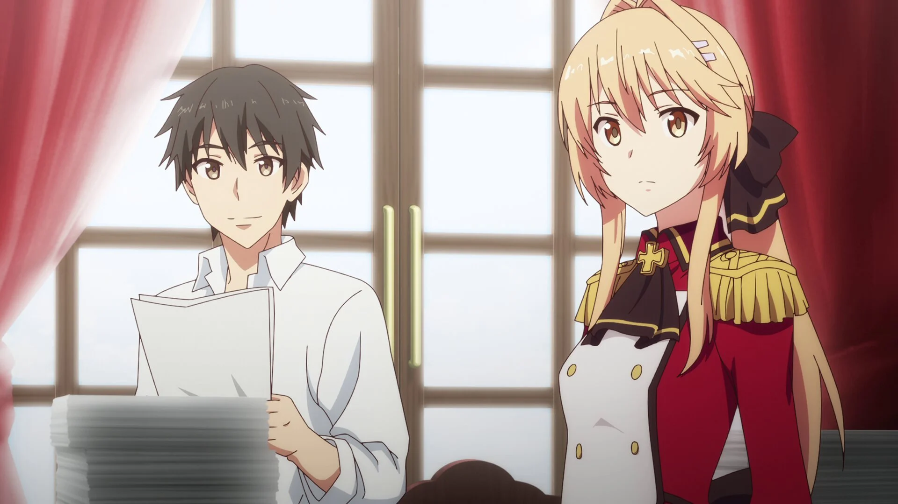
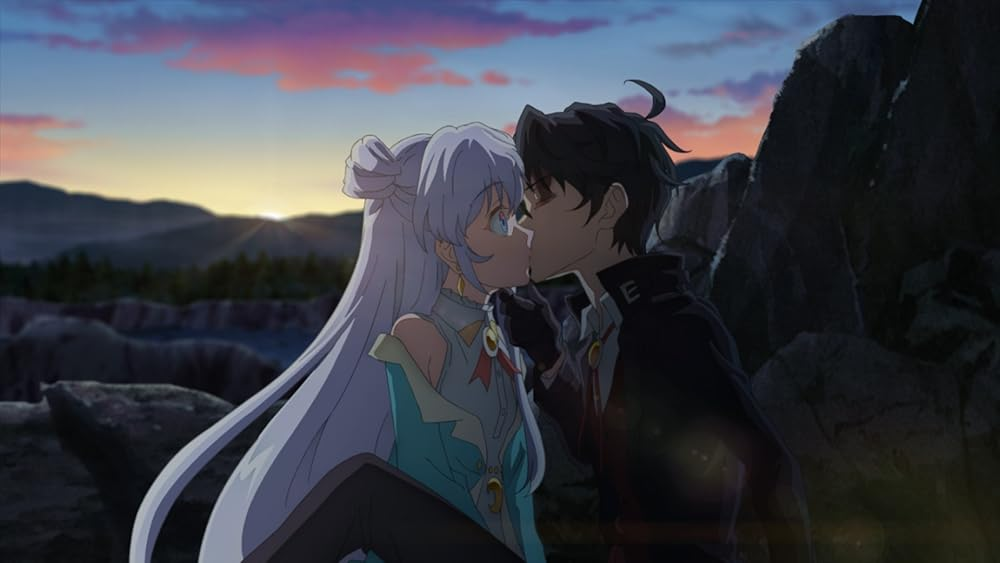
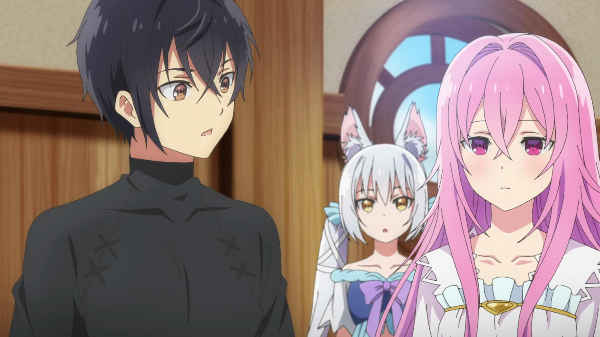
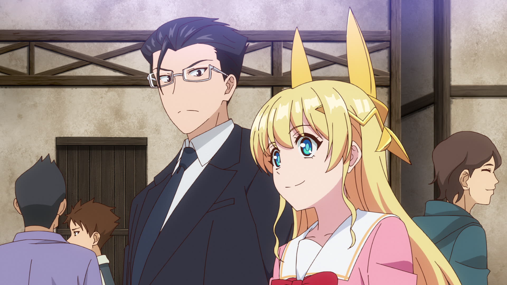
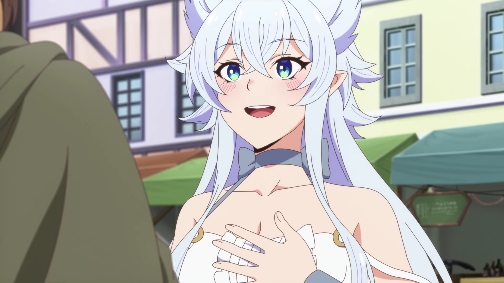
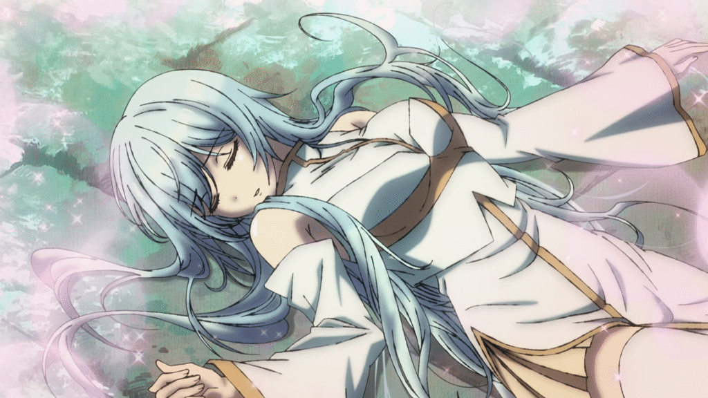
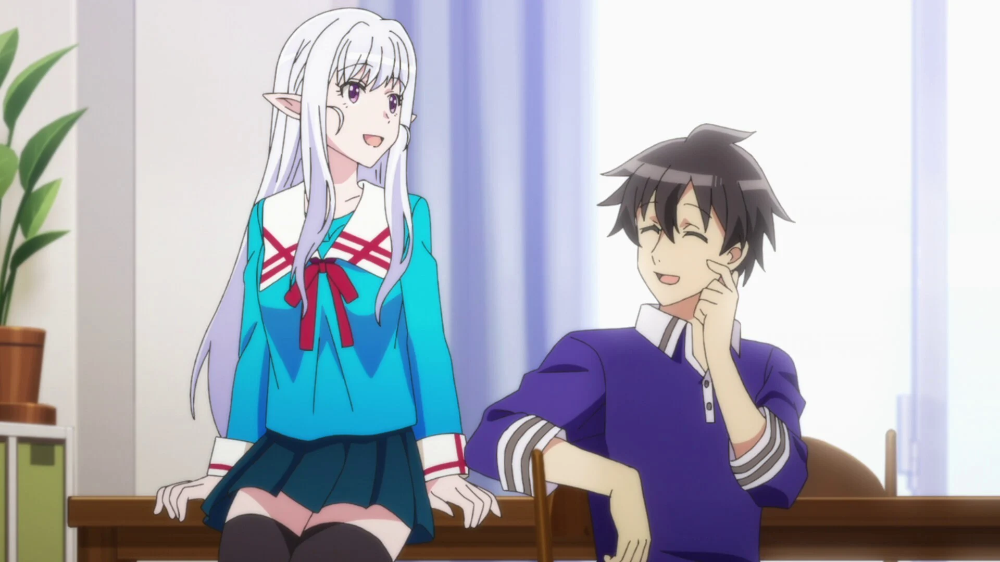
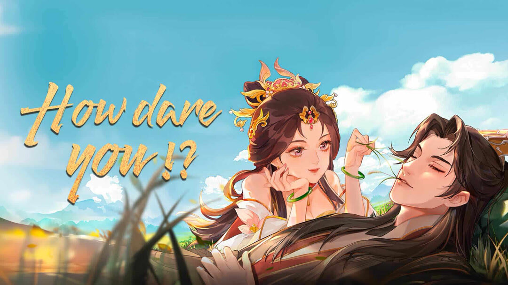

SMASH Senpai
Top 10 Isekai Romance Anime Where the Couple Actually Stays Together (2026 Edition)
Some love stories never move forward. Others commit — and don’t look back.
Isekai romance anime often tease relationships without ever delivering. Confessions get delayed. Progress resets. And couples stay stuck in endless almosts.
But not these.
These anime focus on romance that actually matters. Feelings are acknowledged. Relationships move forward. And when two characters fall in love, they stay together.
Set in fantasy worlds filled with magic, kingdoms, and chaos, these stories prove that isekai doesn’t need endless bait to deliver emotional payoff.
These are the Top 10 Isekai Romance Anime where the couple actually stays together — no constant resets, no fake progress, just real romance in another world.
Sponsored
#1 The Familiar of Zero
The Familiar of Zero is one of those rare early isekai anime where the romance isn’t just bait — it’s the emotional backbone. What starts as hostility, misunderstandings, and constant friction slowly evolves into genuine attachment.
Louise is explosive, prideful, and painfully insecure. Saito is confused, displaced, and treated like a tool. Their relationship begins on completely uneven ground, which makes every step forward feel hard-earned. Trust isn’t handed out. It’s built through shared danger, mistakes, and emotional vulnerability.
The series doesn’t rush romance. It lets jealousy sting. It lets arguments hurt. It lets silence sit uncomfortably. And through that mess, something real forms. Not perfection — commitment.
What separates this anime from many modern isekai is follow-through. Feelings don’t reset. Progress isn’t erased. When Louise realizes what Saito means to her, the story respects that growth.
By the end, this isn’t just a master and familiar. It’s two flawed people choosing each other again and again, even when it’s inconvenient. That consistency is exactly why this romance still stands out.
- Episode count: 49 (4 seasons)
- Genre: Isekai, Romance, Comedy, Fantasy
- Known for: Tsundere romance done right
- Core theme: Commitment through conflict

play anime smash or pass here (not sponsored)
SMASH SENPAI – Smash or Pass#2 Trapped in a Dating Sim: The World of Otome Games Is Tough for Mobs
At first glance, this anime looks like pure parody. A cynical protagonist, a reversed power fantasy, and a world built on absurd romance tropes. But beneath the satire, there’s a surprisingly sincere romance hiding in plain sight.
Leon is dropped into a world where romance is scripted, choices are predetermined, and affection feels artificial. Instead of playing along, he breaks the system. That defiance becomes the foundation of his relationships — especially with characters who were never meant to be chosen.
The romance works because it rejects destiny. Feelings don’t appear because the game says so. They form through shared struggles, mutual respect, and the refusal to treat people as disposable routes.
What’s refreshing here is clarity. Emotional progress isn’t vague. Intentions aren’t endlessly teased. When bonds deepen, the story acknowledges it instead of resetting everything for the next joke.
This is an isekai romance that understands its genre well enough to criticize it — and then quietly do better. By choosing sincerity over endless options, it proves that even in a dating sim world, real commitment can exist.
- Episode count: 12
- Genre: Isekai, Romance, Comedy, Fantasy
- Known for: Satire with emotional payoff
- Core theme: Choosing love over systems
Sponsored
#3 How a Realist Hero Rebuilt the Kingdom
This anime approaches romance the same way it approaches politics — slowly, logically, and with long-term consequences in mind. There’s no explosive passion here. Instead, there’s trust, cooperation, and emotional stability.
Souma isn’t summoned to fight demons or collect harems. He’s summoned to fix a nation. And in the middle of reforms, diplomacy, and responsibility, romance grows quietly through mutual reliance.
Liscia isn’t sidelined or reduced to motivation. She’s an equal partner. Their relationship develops through shared burdens, honest conversations, and the understanding that leadership is lonely.
What makes this romance special is its permanence. Feelings aren’t dramatic, but they’re unwavering. Once a commitment is made, the story moves forward instead of looping endlessly.
This is isekai romance for viewers who value maturity. Love here isn’t about excitement — it’s about building something that lasts. In a genre obsessed with spectacle, that realism becomes its strongest feature.
- Episode count: 26
- Genre: Isekai, Romance, Fantasy, Political
- Known for: Mature relationship dynamics
- Core theme: Stability over spectacle
#4 The World’s Finest Assassin Gets Reincarnated in Another World as an Aristocrat
This anime takes the usual isekai reincarnation concept and sharpens it with intelligence, strategy, and restraint. Instead of a clueless protagonist, the story follows a professional assassin reborn into a noble family with a single mission — eliminate the future Hero.
Lugh isn’t overpowered in the loud, flashy sense. His strength comes from planning, patience, and understanding human behavior. Every action feels calculated. Every relationship has purpose. That grounded approach makes the world feel believable rather than chaotic.
The romance elements develop slowly and organically. The girls around Lugh aren’t instantly obsessed. Trust is earned. Affection grows through shared goals, training, and emotional vulnerability. It feels mature compared to most isekai harems.
What really stands out is the moral tension. Lugh questions his role, his past life, and whether he’s truly changed. The anime constantly asks if killing for a “greater good” can ever be justified. Those themes add weight to every decision he makes.
This isn’t just power fantasy. It’s an isekai about responsibility, consequence, and redefining purpose in a second life. Smart, stylish, and surprisingly thoughtful.
- Episode count: 12
- Genre: Isekai, Fantasy, Romance
- Known for: Strategic protagonist, slow-burn relationships
- Core theme: Purpose beyond reincarnation
Sponsored
#5 Seirei Gensouki: Spirit Chronicles
Seirei Gensouki blends tragedy, reincarnation, and fantasy into a surprisingly emotional package. The story follows Rio, a boy living in poverty who awakens memories from a past life in Japan. That dual identity shapes everything he becomes.
Unlike typical isekai heroes, Rio’s journey is fueled by loss. His childhood trauma, social isolation, and thirst for justice create a quiet intensity. The anime focuses heavily on emotional scars rather than raw power.
Romance plays a subtle role. Connections are built through shared pain, loyalty, and gratitude. The female characters represent different stages of Rio’s emotional growth, not just romantic options. That restraint gives the relationships more authenticity.
The fantasy world itself feels traditional, yet comforting. Magic academies, noble politics, and spirit contracts all contribute to steady world-building. Nothing feels rushed. The pacing allows moments to breathe.
Seirei Gensouki shines when it embraces quiet emotion. It’s about identity, belonging, and choosing who you want to be when given a second chance. A calm, reflective isekai with heartfelt undertones.
- Episode count: 12
- Genre: Isekai, Fantasy, Romance
- Known for: Dual-life protagonist, emotional backstory
- Core theme: Healing through rebirth
#6 Life with an Ordinary Guy Who Reincarnated into a Total Fantasy Knockout
This anime immediately stands out by refusing to take itself seriously. What starts as a standard fantasy reincarnation quickly turns into chaos when an ordinary man is reborn as an irresistibly attractive girl. The result is nonstop comedic insanity.
The core dynamic revolves around friendship. Two best friends are thrown into another world, forced to rely on each other while navigating awkward attraction, jealousy, and confusion. The gender swap twist becomes a tool for comedy rather than shock value.
Beneath the jokes, the anime explores identity. Attraction feels uncomfortable. Feelings become complicated. The characters struggle with how much of themselves remains the same after reincarnation. That emotional tension gives weight to the humor.
The fantasy setting intentionally exaggerates tropes. Overpowered abilities, ridiculous villains, and absurd quests all exist to support the comedy. Nothing is meant to be taken too seriously — and that’s the charm.
This isekai succeeds because it understands timing. It balances heart with absurdity, friendship with romantic confusion. A rare comedy isekai that’s genuinely funny without losing emotional grounding.
- Episode count: 12
- Genre: Isekai, Comedy, Romance
- Known for: Gender swap humor, friendship focus
- Core theme: Identity and attraction chaos
Sponsored
#7 Chillin’ in Another World with Level 2 Super Cheat Powers
This anime leans fully into comfort. Instead of high-stakes battles or world-ending threats, it focuses on peaceful living, soft romance, and emotional warmth. The isekai setup exists mainly to create distance from stress.
Flio is summoned with low expectations, only to unlock absurd power after reaching level two. Rather than becoming a conqueror, he chooses restraint. That decision defines the tone — calm, gentle, and deliberately slow.
The romance with Fenrys develops naturally. There’s no constant misunderstanding, no endless teasing. Feelings are acknowledged early, and the relationship moves forward without artificial delays. That honesty is refreshing.
What makes this series work is emotional safety. The characters support each other. Conflicts resolve quickly. The world feels kind rather than hostile. It’s the kind of anime meant to be watched when you want to relax, not overthink.
Chillin’ in Another World understands its purpose. It’s not trying to be intense or groundbreaking. It delivers exactly what it promises — a peaceful fantasy romance where happiness is allowed to last.
- Episode count: 12
- Genre: Isekai, Fantasy, Romance, Slice of Life
- Known for: Wholesome pacing, early relationship commitment
- Core theme: Choosing peace over power
#8 There Was a Cute Girl in the Hero’s Party, So I Tried Confessing to Her
This anime asks a simple question: what happens after the adventure ends? Instead of focusing on battles, it explores the quiet moments that come afterward — when heroes settle down and try to live normally.
The protagonist is neither chosen nor special. He’s just someone who falls in love with a girl who already lived a legendary life. That imbalance creates genuine emotional tension.
Romance develops through everyday interactions. Cooking together. Working side by side. Learning how to exist without constant danger. Feelings grow steadily, not explosively.
What makes this story charming is its sincerity. There’s no harem pressure. No competition. Just two people navigating affection while adjusting to a slower world.
This anime stands out by lowering the stakes and raising emotional realism. It proves romance doesn’t need grand spectacle. Sometimes, a confession is more powerful than any final boss.
- Episode count: 12
- Genre: Fantasy, Romance, Slice of Life
- Known for: Post-adventure romance focus
- Core theme: Love after heroism
#9 Welcome to Japan, Ms. Elf!
This anime flips the usual isekai formula. Instead of humans entering fantasy worlds, a fantasy being steps into modern Japan. The result is culture shock, comedy, and surprisingly tender romance.
The elf protagonist experiences everyday life with childlike curiosity. Trains, apartments, convenience stores — everything feels new. That perspective makes even ordinary moments feel special.
Romance here grows through shared discovery. Teaching. Learning. Laughing at misunderstandings. The bond forms naturally, without urgency or pressure.
What separates this anime from standard romcoms is tone. It’s soft. Gentle. Unhurried. There’s no rush to escalate drama. The focus stays on emotional connection.
Welcome to Japan, Ms. Elf! is about appreciating simplicity. It celebrates quiet companionship and the beauty of small moments. A cozy reverse isekai with a sincere heart.
- Episode count: 12
- Genre: Reverse Isekai, Romance, Slice of Life
- Known for: Cultural contrast, soft romance
- Core theme: Finding comfort in another world
#10 How Dare You!?
How Dare You!? thrives on attitude. It’s a fantasy romance built around defiance, sarcasm, and refusing to play assigned roles. The tone is sharp, playful, and unapologetic.
The protagonist isn’t interested in being polite or obedient. Instead, they push back against expectations, authority, and fate itself. That rebellious energy drives both the plot and the romance.
The relationship develops through conflict. Arguments turn into understanding. Tension turns into trust. The characters challenge each other emotionally instead of falling into instant affection.
The fantasy elements support the attitude. Political tension, social hierarchies, and rigid rules create pressure. Romance becomes an act of resistance rather than comfort.
This anime stands out because it refuses to be passive. Love here is loud. Messy. Defiant. A fitting end to a list focused on commitment over hesitation.
- Episode count: 12
- Genre: Fantasy, Romance
- Known for: Bold tone, confrontational romance
- Core theme: Defiance through love
Play Smash or Pass on SMASH Senpai.
 PLAY SMASH OR PASS
PLAY SMASH OR PASS